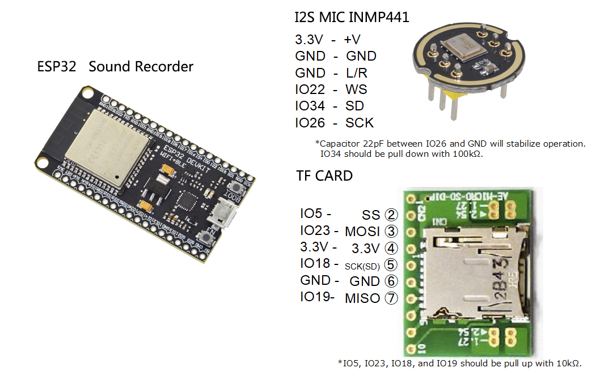

INMP441 / ADMP441 类麦克风
录音示例和接线图显示了数字麦克风方案，常用信号为 3V3、GND、SCK/BCLK、WS/LRCLK、SD 与 L/R。
Optional hardware
这些器件只出现在随附示例中，不能据此认定已经购买或焊接。本页把旧 ESP32 接线转换为适合当前 ESP32-S3 N16R8 的建议方案。
Scope
录音示例和接线图显示了数字麦克风方案，常用信号为 3V3、GND、SCK/BCLK、WS/LRCLK、SD 与 L/R。
播放和录音示例都依赖 SD 卡，但现有文件没有目标卡座的完整规格或电平转换原理图。
Proposed mapping
以下是无明显板载冲突的起始方案，不是原文件中的既有接线。
| 功能 | 外设端 | ESP32-S3 | 说明 |
|---|---|---|---|
| I²S 公共时钟 | BCLK / SCK | GPIO4 | 同一主机可同时驱动播放模块与麦克风 |
| I²S 帧时钟 | LRCLK / WS | GPIO5 | 左右声道/采样帧同步 |
| I²S 播放数据 | DIN（功放/DAC） | GPIO6 | ESP32-S3 输出 |
| I²S 录音数据 | SD（麦克风） | GPIO7 | ESP32-S3 输入 |
| 麦克风声道 | L/R | 固定接 GND | INMP441 类模块低电平选择左声道；如软件明确要右声道则改接 3.3 V |
| 麦克风供电 | VDD / GND | 3V3 / GND | 数字麦克风通常使用 3.3 V，先核对实物丝印 |
| microSD 片选 | CS / SS | GPIO10 | 独立片选 |
| microSD 主机输出 | DI / MOSI | GPIO11 | ESP32-S3 → 卡/模块输入 |
| microSD 时钟 | SCK | GPIO12 | SPI 时钟 |
| microSD 主机输入 | DO / MISO | GPIO13 | 卡/模块输出 → ESP32-S3 |
Legacy reference

| 旧图引脚 | 当前板问题 | 处理 |
|---|---|---|
| GPIO22 / 23 / 25 | ESP32-S3 没有这些 GPIO | 必须重新映射 |
| GPIO26 | 被 Flash/OPI PSRAM 总线占用 | 禁止用于外设 |
| GPIO34 | 开发板未引出 | 改用可访问输入脚 |
| GPIO19 | 与 USB D− 共用 | 若保留原生 USB 则避开 |
Power checklist
IN-OUT 焊盘/跳线状态；接入前先确认实物并测量电压。Local sources
MAX98357AETE/MAX98357_TEST/录音接线图.jpgMAX98357AETE/MAX98357_TEST/esp32_nmmp441_soundRecorder/MAX98357AETE/MAX98357_TEST/esp32_MusicPlayer-master/ESP32-S3/1778810837723945.pdf 与 ESP32-S3 芯片数据手册